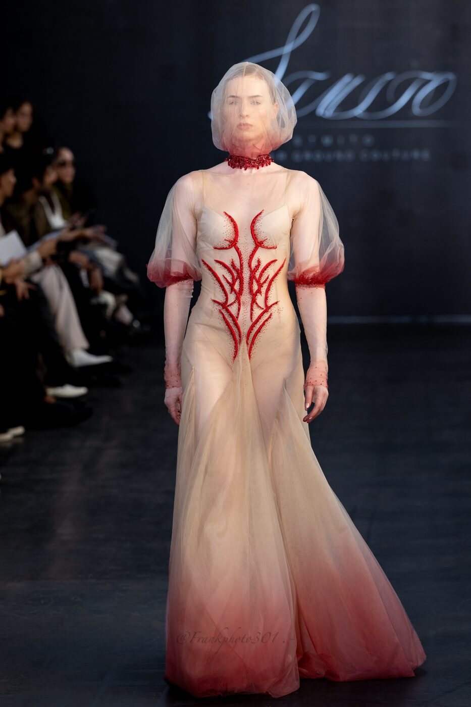

Satomi Ito named her Spring-Summer 2027 collection after molten rock. She showed it on 4 October, inside a former metalworkers' hall in the eleventh, and the clothes behaved like something still cooling from an eruption.
The label is called STMITO. The backdrop that night read Underground Couture, two words Ito has worked toward for several seasons. Spring-Summer 2027 carried the title MAGMA, A Beautiful Hell, and the reference was literal. Heat, pressure and movement under the surface, and the shapes that survive the trip up.
Global Fashion Collective staged the presentation. The platform has carried a steady run of Japanese and Asian designers onto the Paris calendar, and Ito fits its profile. She works out of Japan, in an atelier that treats a dress as a surface for growth, something that spreads and hardens rather than something simply cut and sewn.
The title did real work. Magma is rock in the one state where it flows, caught between solid and liquid, destructive on the way out and fertile once it settles. Ito dressed that transition instead of the explosion or the aftermath. Her clothes sit in the moment of change, which is the hardest moment to hold.
The veins
The clearest idea ran in red across the body. Beadwork traced branching lines over sheer bodices, the way lava finds the cracks in cooling rock. On one look the lines climbed from the hip and split like a river delta seen from the air. The color sat under tulle rather than on top of it, so the pattern read as something beneath the skin.
The finale took the idea to its limit. A sheer sheath ran black at the shoulders and bled to red down the spine, veined in crystal, with long gloves to match. Below the waist it broke into red and black tulle, layer on layer. It was the single moment in the show where the heat reached the surface completely.
The cloth
Most of the collection sat on bias-cut tulle and jersey that moved with the walk. A blush gown faded to deep red at the hem, its torso marked with coral-red beadwork, a veil drawn over the head and a beaded choker at the throat. A purple column came next, hooded and cowled, dark beading scattered across the chest like settling ash.
The weight stayed low and the drape did the talking. Sleeves fell long and loose, hems pooled on the floor, and the beadwork gave each piece a spine to hang from. Ito keeps her palette narrow, red against nude against a bruised purple, and lets the surface carry the drama in place of the cut.

STMITO Spring-Summer 2027 at La Maison des Metallos, Paris. Courtesy of Fashion PR Firm
The hands
The textiles came from Suncorona Oda, a Japanese mill Ito has used before. Three-dimensional fabrication came from Stratasys Japan and the Ogawamine Lab, printing structure directly into pieces that cut-and-sew could not hold on its own. This is where the label earns its name. The craft is the argument, and nothing on the runway leaned on a logo to carry it.
Odete Da Silva led the hair. Cristina Cuellar and the Instituto Cristina Cuellar handled makeup, carrying the red up onto the face and throat on several looks so that beadwork and skin read as one surface. Midori Watanabe played piano live through the show, which kept the pace slow and let the garments move without a track pushing them.
A young label took the oldest material on earth and dressed the body in the moment it turns from rock to light.
The Splendid EditThe room
La Maison des Metallos suited the theme better than a white box would have. The building opened as a musical instrument factory and later housed a metalworkers' union, a place with heat and labor worked into its walls. A collection about magma shown inside an old workshop of metal and brass carried a context that read without a program note.
The experimental end of fashion week often lives in showrooms and group shows, away from the cameras trained on the Louvre and the Grand Palais. Ito used that margin well. Freed from a house codebook, she could build a collection around a single image and follow it all the way down.
The read
Paris in October was thick with departures and debuts at the large houses. A label this size does not compete on scale, and Ito did not try. She showed a tight run of looks that each pressed the same point, that a dress can catch the body at the instant something violent turns into something worth looking at.
STMITO has no flagship and no retail machine behind it. What it has is a method, worked season after season and now shown on the city's largest stage. Underground Couture is a claim, and the beadwork, the printing and the live piano were there to back it up.
The collection leaves one image behind. A figure veined in red crosses a dark floor, trailing red and black tulle, carrying its own weather with it. For a young house on a crowded week, that is reason enough to be remembered.